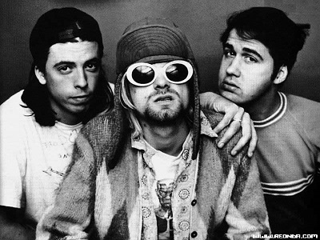
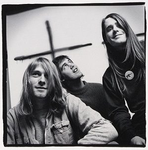

Краткая история группы
NIRVANA! Начало ярчайшего рок-н-ролльного мифа конца XX века: гранж — как новая форма аскезы, как отказ от лишних слов, инструментов и жизненных благ; как единственно верный способ преодолеть физическую и душевную боль. Как и во всяком рок-н-ролльном мифе, кульминацией стала смерть; но пока в 1991 году Курт Кобейн неистов, свеж и полон рвущихся наружу сил, выходит альбом.
ВВ начале 1991 года никто и представить себе не мог какую революцию в музыке произведет сумасшедшая троица парней из Сиетла. И менее всего это предполагали боссы лейбла David Geffen Company (DGC), с кряхтением раскошелившиеся на сумму $287.000 за контракт с малоизвестной командой под названием Nirvana. Предполагалось, что новый альбом группы разойдется тиражом порядка 100 тысяч копий, и этого хватит, чтобы все остались довольны.
Но отпечатанный 50-тысячный тираж был буквально сметен с полок музыкальных магазинов, и по всем Штатам за диском началась настоящая охота. "Nevermind", безусловно, самый программный из альбомов Nirvana. Едва ли еще какой-нибудь группе удавалось так полно отразить в одной пластинке весь путь своего творчества.
Композиция "Smells Like Teen Spirit" стала "гимном поколения" и сделала Курта Кобейна кумиром для миллионов тинейджеров по всей планете. "Smells Like Teen Spirit" — гипнотизирующий своим 4-аккордным круговоротом, не похожий ни на что, известное на то время. К тому же видео на эту песню, до сих остающуюся лучшим рок-треком 90-х, получило, пожалуй, самую устойчивую ротацию на MTV.
Неудивительно, что к началу 1992 "Smells Like Teen Spirit" обосновался в первой десятке американского чарта синглов, а "Nevermind" возглавил чарт альбомов, подвинув с лидирующей позиции самого Майкла Джексона с его широко разрекламированным камбэком "Dangerous".
За два с половиной года после появления "Nevermind" Курт Кобейн превратился в живой фетиш, а скоропостижная смерть сделала его "глашатаем поколения X". Была ли смерть Кобейна неизбежной? Его вдова Кортни лав недавно высказалась следующим образом: "Дорогое бухло и шикарный особняк рок-звезды вполне могли бы отвлечь Курта от всей этой фигни. Думаю, ему нужно было сделать пару кругов на Роллс-Ройсе, трахнуть несколько топ-моделей, ну, или что-нибудь подобное, чем обычно наслаждаются нормальные рок-звезды, что оказало бы на него тонизирующее влияние".
"Nevermind" — достиг отметки 10 миллионов экземпляров только в США, и Американская ассоциация рекординговой индустрии присвоила ему статус бриллиантового. "Nevermind" преподнес меломанам такой гремучий коктейль, которого до тех пор не приходилось пробовать никому: в равных пропорциях — панковский подход, дух классического рока и поп-мелодии. Как это обычно бывает со всеми взрывоопасными альбомами. Среди супер-хитов пластинки стоит отметить "Come As You Are", "In Bloom", "Lithium" и "Something In The Way".
Состав:
Курт Кобейн, вокал, гитара
Крис Новоселич, вокал, бас-гитара
Дэйв Грол, вокал, барабаны.
Краткий список достижений:
- "Melody Maker" ставит альбом на 5 место в рейтинге "30 лучших альбомов 1991 года"
- "Q Magazine" включает "Nevermind" в список "50 лучших альбомов 1991 года"
- "New Musical Express" присуждает 12-й номер среди "Величайших альбомов всех времен"
- "Rolling Stone" включает в список "Главные записи 90-х"
- "Q Magazine" называет "Nevermind" в числе "90 лучших альбомов 1990-х"
- "Entertainment Weekly" ставит на 1 позицию в числе "10 лучших альбомов 90-х"